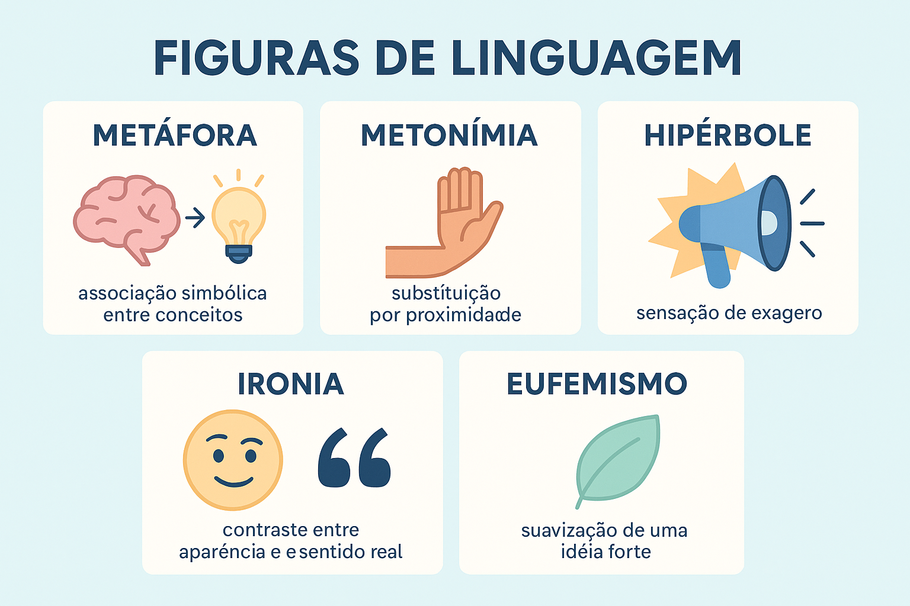

Metáfora, metonímia, hipérbole, ironia e eufemismo: como identificar
Metáfora, metonímia, hipérbole, ironia e eufemismo são figuras de linguagem que participam da construção dos sentidos. Elas permitem estabelecer associações, intensificar experiências, sugerir críticas e suavizar maneiras de apresentar um assunto.
Esses recursos aparecem na literatura, nas conversas, na publicidade, no jornalismo e em outros contextos. Para interpretá-los, é preciso compreender tanto seu funcionamento quanto o efeito que produzem em cada situação.

O que são figuras de linguagem?
As figuras de linguagem são recursos expressivos relacionados à organização dos sons, das palavras, das construções e dos sentidos. Elas ajudam a compreender como um texto diz algo, além de simplesmente reconhecer seu assunto.
Dizer “esperei vinte minutos” apresenta uma duração. Dizer “esperei uma eternidade”, em determinada situação, pode expressar impaciência e tornar a espera subjetivamente mais intensa.
As duas formulações não produzem o mesmo efeito. A interpretação precisa considerar o contexto, o gênero e a relação entre os interlocutores.
1. Metáfora: associação por semelhança
A metáfora aproxima elementos por uma semelhança construída no contexto. Uma característica de um elemento é mobilizada para compreender ou representar outro.
Exemplo: “Aquela professora é uma ponte entre gerações.”
A professora não é uma ponte física. A imagem destaca sua capacidade de estabelecer relações entre pessoas de diferentes gerações. A função de ligação atribuída à ponte orienta a interpretação.
Outros exemplos de metáfora
- “Ele tem um coração de pedra.” — a dureza da pedra sugere insensibilidade.
- “A notícia foi um balde de água fria.” — a imagem representa uma quebra de entusiasmo.
- “A memória é uma casa de muitas portas.” — a memória é representada como um espaço com diferentes possibilidades de acesso.
Metáfora e comparação
Na classificação escolar, a comparação costuma apresentar uma aproximação explícita, marcada por expressões como “como”, “tal qual” e “feito”, quando têm valor comparativo.
- Metáfora: “Sua voz é um abraço.”
- Comparação: “Sua voz acolhe como um abraço.”
Não basta procurar a palavra “como”: ela também pode introduzir perguntas ou exercer outras funções. É necessário verificar se o trecho realmente estabelece uma comparação.
Como identificar a metáfora
- Observe se a leitura literal é inadequada ao contexto;
- Identifique os elementos aproximados;
- Explique qual característica permite essa aproximação;
- Relacione a imagem ao efeito de sentido produzido.
2. Metonímia: referência por associação
A metonímia ocorre quando nos referimos a algo por meio de um elemento associado a ele. Essa associação pode envolver autoria, conteúdo, instituição, instrumento e outras relações.
Exemplo: “Li Machado de Assis nas férias.”
O nome do autor permite fazer referência a uma ou mais obras de sua autoria. A relação relevante é autor pela obra.
Relações frequentes de metonímia
- Autor pela obra: “A turma está lendo Conceição Evaristo.”
- Recipiente pelo conteúdo: “Bebi dois copos de água.” A quantidade de recipientes indica a quantidade de água consumida.
- Lugar pela instituição: “O Planalto divulgou uma nota.” Nesse contexto, o lugar remete à Presidência ou a seus representantes.
- País pela equipe que o representa: “O Brasil venceu a partida”, em uma notícia sobre a seleção.
Relações de parte pelo todo, como “precisamos de mais braços para o trabalho”, também são frequentemente apresentadas como metonímia em materiais escolares. Algumas classificações as distinguem pelo nome de sinédoque.
Metáfora ou metonímia?
- “Minha irmã é uma enciclopédia.” — metáfora: aproxima-se a pessoa de uma obra de consulta para destacar seu conhecimento.
- “Consultei a enciclopédia.” — pode ser uma referência literal a uma obra de consulta.
- “Li Clarice Lispector.” — metonímia: o nome da autora remete à sua produção.
Na metáfora, destaca-se uma semelhança construída. Na metonímia, destaca-se uma associação que permite acessar o referente.
3. Hipérbole: intensificação pelo exagero
A hipérbole é um exagero expressivo que intensifica uma ideia, uma sensação ou uma avaliação. Sua leitura normalmente depende de reconhecer que a formulação não pretende apresentar uma medida literal.
Exemplo: “Já expliquei isso um milhão de vezes.”
Em uma conversa comum, o número sugere repetição e impaciência. Não se espera que o falante tenha contado exatamente um milhão de explicações.
Outros exemplos de hipérbole
- “Estou morrendo de fome.” — intensifica a fome;
- “Chorei um rio de lágrimas.” — intensifica o choro;
- “A fila não acabava nunca.” — enfatiza a demora;
- “Levei uma eternidade para chegar.” — amplia a duração percebida.
Todo número elevado é hipérbole?
Não. Em um relatório, “a plataforma recebeu um milhão de acessos” pode apresentar um dado literal. A classificação depende de como a informação funciona no contexto.
A hipérbole pode produzir humor, dramatização, entusiasmo ou indignação. Ela não deve ser automaticamente confundida com uma tentativa de enganar o leitor.
4. Ironia: distanciamento entre o dito e o sugerido
A ironia envolve um distanciamento entre o que o enunciado apresenta literalmente e a avaliação que o contexto permite reconhecer.
Um caso frequente consiste em formular um elogio aparente para sugerir uma crítica. Entretanto, a ironia não se limita a uma simples troca de uma palavra por seu contrário.
Depois de esperar uma hora por alguém que prometeu chegar cedo, uma pessoa comenta:
“Que pontualidade exemplar!”
A expressão elogia a pontualidade, mas a situação evidencia o atraso. Essa incompatibilidade orienta a leitura crítica.
Pistas para reconhecer a ironia
- Contraste entre o comentário e o acontecimento;
- Elogio incompatível com os fatos apresentados;
- Retomada de uma promessa ou opinião para questioná-la;
- Entonação, gestos ou expressões faciais, na comunicação oral;
- Relações entre palavras e imagens, em charges e anúncios.
Aspas, reticências e pontos de exclamação podem colaborar para a leitura, mas não comprovam ironia isoladamente.
Ironia e sarcasmo
O sarcasmo costuma envolver uma crítica mordaz ou uma intenção de ridicularizar. Pode recorrer à ironia, mas nem toda ironia apresenta esse caráter agressivo.
5. Eufemismo: suavização da expressão
O eufemismo apresenta de maneira mais branda um assunto considerado doloroso, constrangedor, ofensivo ou socialmente delicado.
Exemplo: em uma homenagem a alguém que morreu, dizer “ele nos deixou” suaviza a referência à morte.
Outros exemplos de eufemismo
- “Ela faltou com a verdade.” — pode suavizar a afirmação de que alguém mentiu.
- “Ele foi desligado da empresa.” — pode apresentar de maneira menos direta uma demissão.
- “Precisaremos reduzir o quadro de funcionários.” — pode suavizar o anúncio de demissões.
O contexto é decisivo. “Ele nos deixou na escola”, por exemplo, pode descrever literalmente uma ação de transporte, sem eufemismo.
O eufemismo sempre demonstra delicadeza?
Não necessariamente. Ele pode expressar cuidado com o interlocutor, mas também pode atenuar a responsabilidade por uma decisão ou reduzir a percepção de um problema.
Em uma análise, convém perguntar: o que está sendo suavizado e qual é o efeito dessa escolha?
Quadro comparativo das cinco figuras
| Figura | Mecanismo principal | Exemplo contextualizado |
|---|---|---|
| Metáfora | Aproximação por semelhança construída. | “Sua voz é um abraço.” |
| Metonímia | Referência por associação. | “Li Machado de Assis”, referindo-se às obras. |
| Hipérbole | Intensificação pelo exagero. | “Esperei uma eternidade”, após uma demora. |
| Ironia | Distanciamento entre a formulação e a avaliação sugerida. | “Que pontualidade!”, diante de um grande atraso. |
| Eufemismo | Suavização de uma expressão. | “Ele nos deixou”, em referência à morte. |
Uma frase pode apresentar mais de uma figura?
Sim. Os recursos expressivos podem atuar juntos. Em “chorei um oceano”, por exemplo, a imagem aproxima o volume de lágrimas de um oceano e exagera a intensidade do choro.
Em uma questão objetiva, observe o trecho destacado e o mecanismo solicitado. Se o enunciado pergunta pelo exagero, o foco está na hipérbole.
Como explicar o efeito de sentido
Identificar o nome da figura é apenas uma etapa da interpretação. Também é necessário explicar o que ela faz naquele texto.
- Metáfora: qual imagem é construída e qual característica ganha destaque?
- Metonímia: qual referente é acessado por meio de outro elemento?
- Hipérbole: qual experiência ou avaliação é intensificada?
- Ironia: qual posição, comportamento ou expectativa é questionado?
- Eufemismo: qual assunto é apresentado de maneira mais branda?
Resposta pouco desenvolvida: “Há uma hipérbole.”
Resposta fundamentada: “A expressão ‘esperei uma eternidade’ exagera a duração da espera para transmitir a impaciência do falante.”
Quiz sobre figuras de linguagem
Selecione uma alternativa em cada questão e clique em “Verificar respostas”.
Questão 1 — Metáfora e construção de imagem
Leia a frase:
“Minha mãe ficou uma fera quando soube da notícia.”
A aproximação entre a mãe e uma fera, para representar sua reação de raiva, caracteriza:
Questão 2 — Relação entre referentes
Em uma conversa sobre livros, uma estudante afirma:
“Li Machado de Assis durante as férias.”
O uso do nome do autor para se referir às obras é um caso de:
Questão 3 — Intensificação expressiva
Depois de esperar vinte minutos, uma pessoa reclama:
“Esperei por você durante mil anos!”
O exagero da duração da espera caracteriza:
Questão 4 — O contexto da avaliação
Ao ver que alguém derrubou os materiais que deveria organizar, uma pessoa comenta em tom de reprovação:
“Que organização exemplar!”
O elogio aparente que sugere uma crítica caracteriza:
Questão 5 — Suavização da expressão
Durante uma homenagem a um familiar falecido, alguém diz:
“Ele nos deixou muito cedo.”
A maneira menos direta de mencionar a morte caracteriza:
Perguntas frequentes
Qual é a diferença entre metáfora e metonímia?
A metáfora aproxima elementos por uma semelhança construída no contexto. A metonímia permite referir-se a algo por meio de um elemento associado, como o autor pela obra ou o recipiente pelo conteúdo.
Como identificar uma ironia?
É necessário relacionar o enunciado ao contexto e perceber um distanciamento entre o que se diz literalmente e a avaliação sugerida. A ironia pode transformar um elogio aparente em crítica.
Uma frase pode apresentar mais de uma figura de linguagem?
Sim. Diferentes recursos podem atuar juntos. Em uma questão de prova, observe o trecho destacado e o mecanismo específico solicitado.
Resumo para revisar
- Metáfora: aproxima elementos por uma semelhança construída no contexto.
- Metonímia: permite referir-se a algo por meio de um elemento associado.
- Hipérbole: intensifica uma ideia por meio do exagero.
- Ironia: estabelece um distanciamento entre o dito literalmente e a avaliação sugerida.
- Eufemismo: suaviza a apresentação de determinado assunto.
Para interpretar com precisão, relacione a figura ao contexto e explique seu efeito. A mesma expressão pode assumir sentidos diferentes conforme a situação em que aparece.
Conteúdos relacionados
Explore outros conteúdos
Continue seus estudos acessando outras seções do site Mestre Kira: